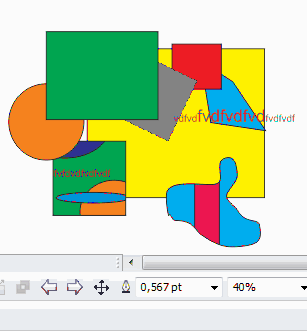

Новое редактирование групп и контейнеров
Sancho / 06.04.2011, 13:59/00:41
Форум:
Так как я много работаю и в CorelDRAW и в Illustrator, привык к хорошему в каждой программе. Мне очень нравится как Илл позволяет работать в группах и масках. Немного подумав я написал макрос который добавляет такую же возможность и в CorelDRAW. С ней можно легко зайти в группу и произвести любые изменения над объектами в ней, а затем так же просто выйти.
Также, вы наверное знаете что в контейнере нельзя работать с направляющими. Благодаря макросу и его новому режиму редактирования, такой проблемы больше нет.
Вот небольшое видео как это работает.

Пока что макрос находится в тестировании в "боевых" условиях. Будет ли этот макрос платным или бесплатным ещё не понятно.
After these actions button of macro appears on the Standard Bar. но чуда не произошло(((
shevchenkoserj, а чудес и не должно происходить :)
Если версия CorelDRAW соответствует требованиям (т.е. Х6), всё сделали правильно и установщик в CorelDRAW сказал что макрос установлен, тогда кнопка обязательно появится.
Sancho, она была на секунду, но как только я нажал на нее она сломала корел моментально но переустановить не выходит. как это побороть хочется попользоваться этой штукой. очень этого мне не хватает в кореле((
Sancho, блин почему они не запилят такую элементарщину в стандартном функционале(
shevchenkoserj, как то видимо у вас совсем плохо с CorelDRAW, раз он упал от такой простой штуки. Повторно установить можно через менеджер макросов, запустив макрос EditModeEx.Install.
Sancho, не могу найти как его запустить? да не повезло вылетел не дав пощупать
Sancho, кстати проверил на другом компе, тоже самое
shevchenkoserj, ну что вам сказать. У меня работает на нескольких компьютера, да и кто покупал/тестировал, не жаловались на какие либо проблемы. Возможно вы используете какое то ПО, которое конфликтует с технологиями на которых работает макрос. Кстати, какая версия (версия + номер обновления) CorelDRAW установлена?
Sancho, 1600707
shevchenkoserj, ну вот вы хотя бы обновились бы. Уже 4-е обновления вышло. Возможно это решит проблему. И система случайно не ХР стоит?
Страницы